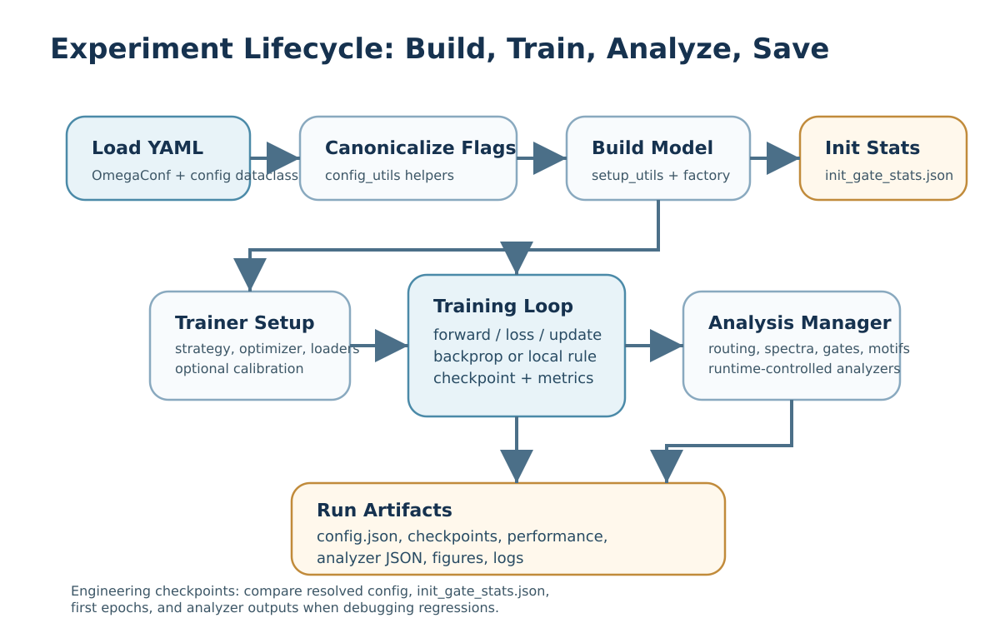

Engineering architecture
This page is for developers who change the library. It maps the package, follows a training run from the YAML file to the run directory, and names the modules to read when tracing a bug or adding a component.

The configuration is loaded into typed settings, the factory builds the encoder, core and decoder through the registries, and the trainers, sweeps and analysis manager produce the run’s artifacts.
For the structure of the dendritic neurons themselves, see Model architecture and Dendritic neurons.
Package layout
The Python package dendritic_modeling lives in src/dendritic_modeling:
Subpackage |
Contents |
|---|---|
|
Typed configuration dataclasses, the strict loader ( |
|
Vision, synthetic and sequence datasets, the dataset registry and the
data-root resolution ( |
|
The architecture factory and registry, and the cores:
|
|
Activation and reactivation-gate builders ( |
|
The wrappers that combine encoder, core and decoder: |
|
The trainer factory and strategies ( |
|
The analysis manager ( |
|
Compact export of trained models with frozen sparse topology
( |
|
Triton kernels for indexed synapses ( |
|
Plotting helpers used by the analyzers. |
|
The command-line programs: |
|
Logging setup, seeds and reproducibility records, the runtime
environment record, information-estimation utilities
( |
Outside the package, the repository holds configs/ (example and reference
YAML files; see Example configurations), docs/ (these pages), tests/,
setup/ (environment file, constraints files and
freeze_constraints.py) and scripts/train_fsdp.sh (a Slurm launcher
for FSDP training).
How a training run executes
dendritic-train calls dendritic_modeling.scripts.training.train_experiments.main,
which runs these steps:
Load the configuration.
dendritic_modeling.config.load_configapplies the command-line options as dot-path overrides and builds the typed configuration. Unknown keys raise; retired and renamed keys produce a warning or an error that names the replacement (see How configs are checked).utils.training_stability_validator.validate_training_stabilitythen rejects configurations with known critical problems.Start distributed training, when launched by
torchrun, and checkdistributed.modeagainst the launcher.Set up the run (
scripts.script_utils.setup_utils.setup_environment): resolve the seed streams and numerics settings, create the run directory and its log files, writeresolved_seeds.jsonandruntime_environment.json, load the datasets (datasets.get_unified_datasets: registered datasets first, then the built-in loaders) and build the model.Build the model (
setup_utils.initialize_model): the encoder, the core throughnetworks.architectures.factory.get_architectureand the decoder, wrapped in aClassifier,RecurrentClassifierorRegressor. Structured E/I cores resolve their type aliases (config.model_aliases) while they are built.Record the start state: wrap the model for DDP when there are several processes, write
init_gate_stats.jsonandconfig.json.Prepare training: create the analysis manager (
analysis.AnalysisManager), calibrate data-driven reactivation gates (reactivation_calibration.json), create the optimizer from the model’s parameter groups and the trainer fromtraining.factory.get_trainer.--validate-onlystops here, after writingnparams,model_resources.jsonandoperator_card.json.Train, then apply pruning when it is configured.
Write the results:
nparams,model_resources.json,operator_card.json,training_summary.json,final_model.pt, and the outputs of the final analysis.
Run directory layout describes every file. The FSDP entry point
(train_experiments_fsdp) follows the same order with an FSDP-wrapped
model and its own trainer.


The resolved configuration drives model construction, gate initialization, training, analysis and the saved artifacts.
Feedforward and recurrent E/I layers
The feedforward and recurrent E/I layers use the same branch-level building
blocks (DendriticBranchLayer and the initialization in
dendritic/initialize*.py). The recurrent layers add temporal state and
recurrent synapses; they do not change how a branch integrates its inputs.

One time step of a recurrent unified E/I layer (EILayerConfig with an
excitatory and an inhibitory PopulationConfig).
At each time step the inhibitory population updates first, from the
feedforward excitatory and inhibitory streams and the previous-step outputs
of both populations. The excitatory population then reads the feedforward
stream, the same-step inhibitory output and the previous-step outputs. Only
the excitatory output goes to the next layer or to the decoder.
allow_self_recurrence: false removes the previous-step input of each
population to itself and keeps the recurrence between the two populations.
See Unified E/I core.
Recurrent module boundaries
The recurrent dendritic implementation in
networks/architectures/recurrent is split by responsibility:
network orchestration:
population_network.pybuilds the ordered population-network layers, manages the sequence state and reduces the readout;layer routing:
population_layer.pymaps named populations and directed connections ontoStatefulDendriNetmodules;configuration and state:
population_configs.py,population_common.py,population_sources.py,population_state.pyandpopulation_constants.pyhold the dataclasses, source-name normalization and runtime state;population options:
ei_config.pydefinesPopulationConfig(synapse counts, morphology, time constants, synapse types, soma dynamics, dendritic spikes, soma feedback);temporal execution:
stateful_dendrinet.pyowns the branch layers and the per-step update, with helpers instateful_layers.py,stateful_setup.py,stateful_step.pyandstateful_feedback.py;typed synapse dynamics:
stateful_typed_dynamics.pyintegrates receptor traces, short-term plasticity, voltage gates and typed shunting or additive currents;soma and branch events:
spiking_soma.py(leaky integrate-and-fire somas) anddendritic_spikes.py(branch spikes and plateaus);morphology:
dendritic_geometry.py(level sizes and synapse budgets);structured recurrent cores: the
structured_*modules translate the structured E/I sections into recurrent networks;unified E/I networks:
ei_layer.py,ei_network.pyandei_state.py; baselines:baseline_rnn.py,heterogeneous_leak_ctrnn.pyandlegendre_memory.py.
A new recurrent feature puts its standalone dynamics in a focused helper
module and leaves the branch construction and the ordered step in
StatefulDendriNet.
Key modules
scripts/training/train_experiments.py: the training entry point.scripts/script_utils/setup_utils.py: run setup andinitialize_model.config/config.py:load_config,config_from_mappingandload_analysis_config.networks/architectures/factory.py:get_architectureand the built-in core builders (withfactory_recurrent.py,factory_spatial.pyandfactory_unified.py);networks/architectures/registry.py: registered architectures.networks/architectures/excitation_inhibition/ei_network.py:ConfigurableEINetwork, the structured E/I core.networks/architectures/excitation_inhibition/dendritic/:DendriNet,DendriticBranchLayer,BlockLinearand the initialization methods (initialize.pyre-exports theinitialize_*modules).networks/architectures/excitation_inhibition/synapse/: the sparse synapse classes, their registry (factory.py), the indexed synapses (indexed.pyre-exports the fixed, rewiring and candidate-pool variants) and the projection backends (kernels/backend.py).models/base.py: parameter groups and the training hooks shared by the model wrappers.training/factory.py:get_trainerand the strategy registry;training/strategies/: the trainers;training/optimizers/andtraining/loss/: optimizer and loss registries.datasets/standard_datasets.py:get_unified_datasets;datasets/registry.py: registered datasets;datasets/sequence/: sequence tasks, with the builder registry insequence/builders.analysis/managers/analysis_manager.py: runs the analyzers;analysis/registry.py: analyzer metadata (configuration field, class, output directory) from which the manager builds the built-in analyzers.analysis/core/information.py:InformationAnalyzer; its implementation mixins live inanalysis/core/information_parts/.networks/architectures/classical/pretrained.py: a torchvision backbone splitter (list_backbone_layers), a Python API that the training entry points do not use.utils/runtime_environment.pyandutils/logging_config.py: the environment record and the logging setup.
Adding a component
Add or extend the typed configuration field in
src/dendritic_modeling/config, with validation, so the loader accepts and checks it.Implement the component and register it where a registry exists (see Extension registries), or add it to the built-in dispatch.
Keep the default behaviour unchanged: a new option is off by default, and a test shows that the default output does not change.
Add focused tests next to the changed subsystem (see Contributing).
Document the option on the page that explains its topic, and add an example configuration when it helps.
Debugging a run
When a result changes unexpectedly, compare the run directories in this
order: config.json, resolved_seeds.json, runtime_environment.json
(library commit, dependency versions, devices), init_gate_stats.json,
the first epochs in training_summary.json and the logs, then the outputs
of the analyzers for the affected subsystem. See Run directory layout and
Reproducibility.